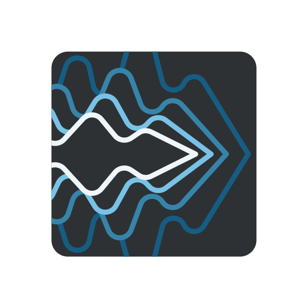
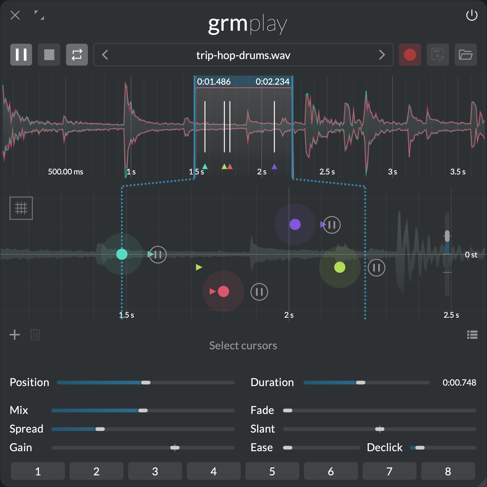
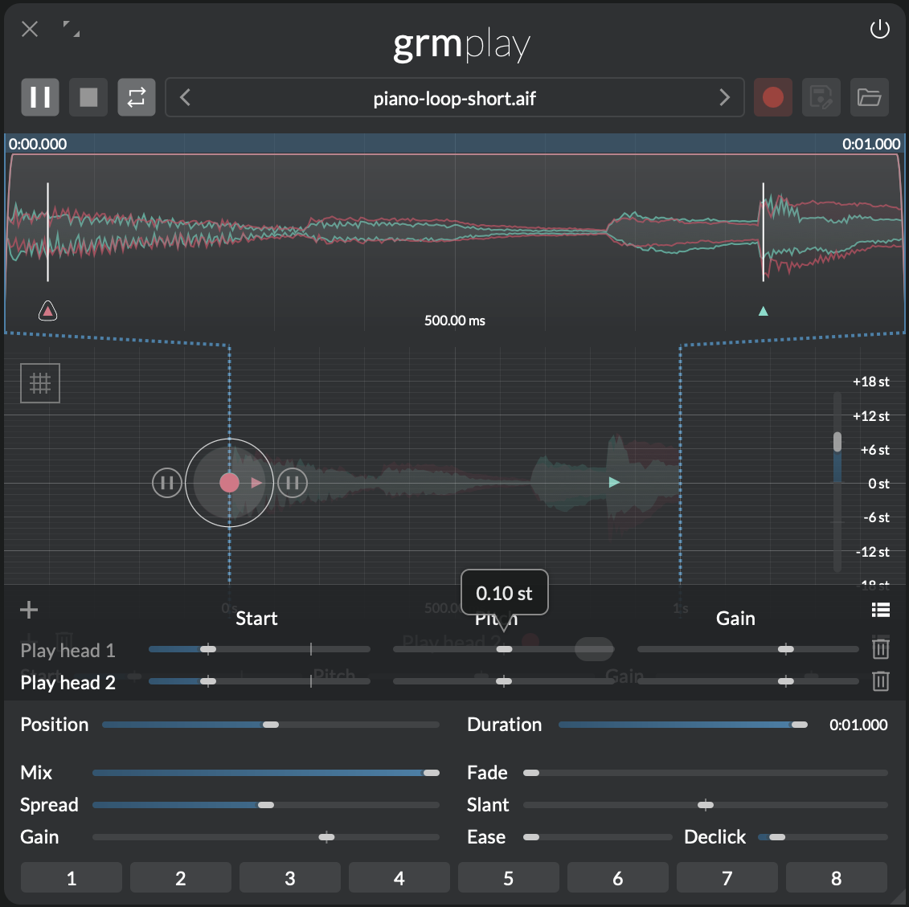
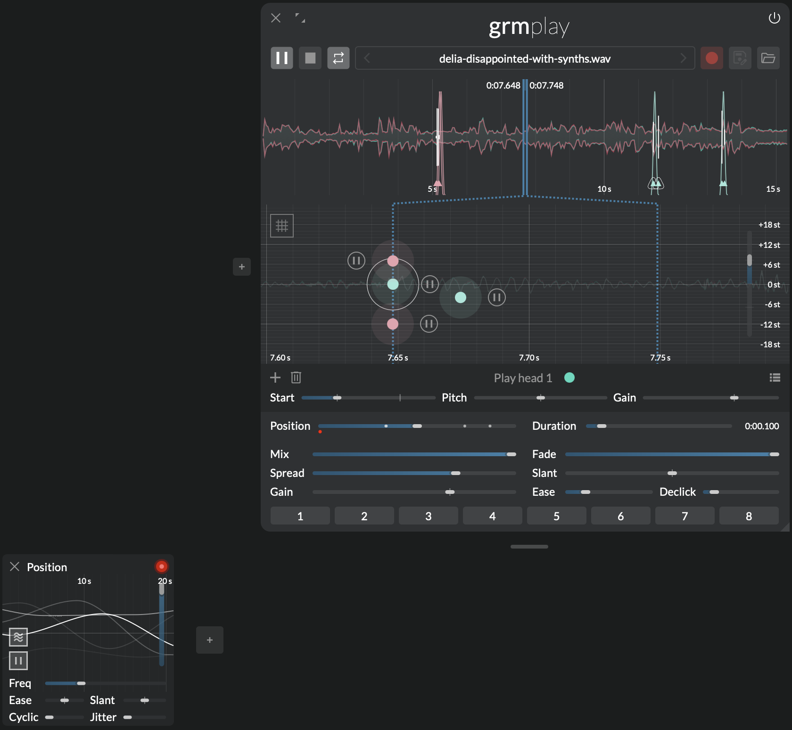
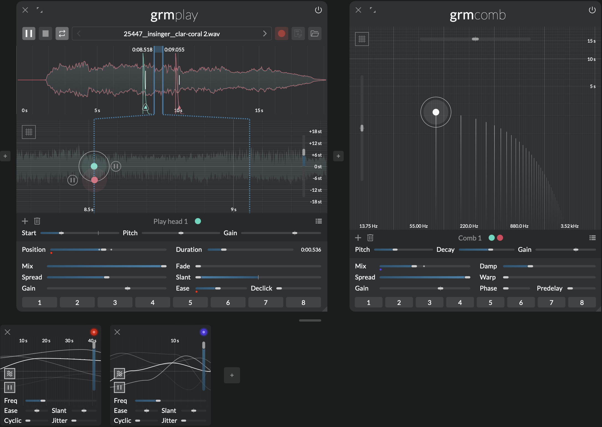
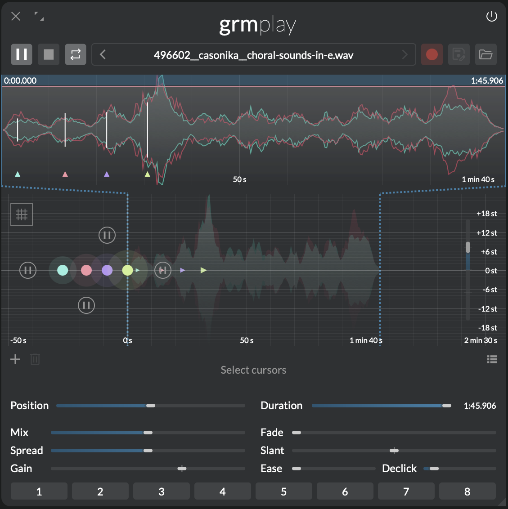

A playground for audio files

Play
Play is a multi-playhead file player with versatile playback region and envelope controls. It allows mangling any source material into a wide variety of outcomes. From percussive glitches to mesmerizing drones. Its built-in recording functionality allows sampling of inputs or resampling of whole patches.
Features
- Multiple playheads with adjustable playback rate, pitch and position.
- Built-in recording into a temporary buffer with an option to save the recording to a file.
- Looped and single shot playback.
- Global and individual transport controls for each playhead.
- Playback in forward and reverse direction.
Context
Spliced tape, varispeed and reversed reels: in the hands of musique concrète artists, the reel-to-reel recorder became an instrument, turning sound itself into material for playful experimentation. Play taps into this history enabling polyphonic exploration of the source material without cluttering your desk with snippets of magnetic tape.
When playing sound from a tape speed and pitch are invariably linked. Doubling the playback speed pitches the recorded material up by an octave. Halving it pitches it down by an octave. Playing the same material in a loop with a difference of 7st (perfect fifth) creates a 3:2 pattern.
Each cursor can have an independent pitch and playback position. Fade is applied on play and pause as an envelope. In looped mode it additionally determines the overlap of the loop region. If fade is at 100% the sound will always overlap. When a region changes during playback the playhead will attempt to restart within the new region. To ensure a smooth and consistent playback it will keep fading out from its original position.
Play you can load mono, stereo and multichannel audio files. If the number of channels in the audio file don't match the number of channels of the module fanning and folding will be employed to distribute the channels.
Controls
Toolbar
- Play/pause: Global transport state. Toggles playback of all playheads. When playing after pause the playheads will resume from their last position. This parameter has as many independently-modulatable instances as there are playheads (see Modulation).
- Stop: Immediately stops playback of all playheads. Per-playhead transport controls will be reset. When playing the next time start positions will be determined by the playhead’s start position parameter.
- Loop/single shot: When toggled on: playback will be looped until paused. When toggled off: the region will play only once until Play/Pause is toggled another time.
- File browser: Shows the currently loaded file. Click to bring up a list of audio files in the same directory.
- Record: Records the input of the module into a temporary buffer (max. 1 minute).
- Save: Save temporary buffer to file.
- Open file: Opens an audio file.
Region overview
The region overview integrates a view of the entire file, the playback region and the envelope. When hovering the mouse over the waveform the pointer becomes a hand. Click-and-drag allows to pan and zoom the viewed region. The playback region is represented by a blue bar at the top of the region overview. It can be manipulated by drag and drop: vertical drag shrinks/enlarges the region, horizontal drag moves it. Additionally start and end points can be adjusted by dragging the vertical bars at the beginning or end of the region. Holding down alt while dragging anywhere on the waveform allows to define a new playback region.
Cursor area
Click to add a playhead; double-click a playhead to remove it.
-
Quantize button: Click to quantize all playhead pitches to the closest semitone.
-
Rate: Rate multiplier of playback speed. 0x stops advancing a playhead’s position; positive plays forward; negative plays backwards. This parameter has as many independently-modulatable instances as there are playheads (see Modulation).
Each playhead has four controls:
- Play/Pause (button): Play/pause each individual playhead. A playhead will play if and only if its play/pause state is the opposite of the global playback parameter (XOR relationship)
- Start (X axis): Start position in the current region. If the start position lays outside of the playback region (less than 0% or more than 100%) playback will start with a delay.
- Pitch (Y axis): Pitch relative to input material in semitones. Lower pitch slows down playback, higher pitch speeds it up.
- Gain (Z axis): Output gain of the playhead.
Global controls
- Mix: Crossfades the dry signal (0%) with the wet signal (100%).
The following parameters have as many independently-modulatable instances as there are playheads (see Modulation).
- Position: Center position of the playback region.
- Duration: Duration of the playback region in percentage of the total file length.
- Spread: Channel-locality of each play head. At 0%, each play head reads only the channels it is assigned to (see the global Spread section); at 100%, each play head reads all channels in parallel (multi-mono).
- Gain: Output gain of all playheads. Combined with the gain of playhead.
- Fade: Combined length of the fade-in and fade-out envelope. In loop mode it determines the cross fade time.
- Slant: Distribution of fade time between fade in and fade out. At 0% the attack is instant and the entire time is used for the fade out; at 50% the envelope is symmetric; at 100% the envelope is slanted towards the right.
- Ease: Easing curve of the applied fades, from linear (0%), to abrupt (100%).
- Declick: Time of short fade that is applied to suppress clicking. This fade is applied on play, pause and loops.
Tips and tricks
Note
Dragging an audio file from Ateiler's own patch recorder or the system’s file explorer anywhere into the module chain will create an instance of Play preloaded with the dropped file in place.
Phasing

To achieve a phasing effect — as popularized by Steve Reich — place two playheads at the same point. Then change the Pitch parameter of one playhead to deviate by a very small amount. Note that holding down the shift key while dragging a slider allows for finer control. A very small difference (in the range of 0.05st) will create effects evocative of comb filtering. Slightly higher differences in playback speed result in faster alternating rhythmical patterns. This effect is easiest explored with short rhythmical loops but works on a large variety of material.
Granular

Granular synthesis is a sound synthesis method that works by layering audio of tiny segments called "grains", typically lasting from 1 to 100 milliseconds. In line with Atelier's philosophy the parameter range of loop durations can be as short as one sample or as long as the whole file. To create a granular effect set the Duration to a very small value. Note that the absolute value of the loop duration is displayed right next to the duration slider. Next add a generous amount of Fade (in granular parlance "windowing") to smooth out the grains. You can add several playheads with different pitches to create chords. Reset the position to 50%. Note that double clicking any slider will reset its position to the default value. Now add a modulation to Position. Voilà.
Time and pitch stretching effects can be achieved by modulating Duration with a linearly increasing curve (e.g. using Peak in loop mode with Slant at 100%). Adjust the modulator's time to vary the speed; adjust the playhead's pitch to repitch while keeping the overall tempo.
Percussions with drone material using fades

Using envelope shapes it is easy to reappropriate drone-y material for percussive sounds. Create one or more playheads, adjust the duration and bring Slant to or close to 0%. Adjust Ease to make a fast decay. Note that Declick adds a bit of smoothing even if Slant is at 0%. If you want very sharp attacks set Declick to 0ms. To get a great variety of sounds slowly modulate Position. Tip: this might pair nicely with Comb further down the chain.
Multichannel cannon

When a playhead's Start (X axis) parameter is less than 0% it will start out muted until it reaches the playback region. This effect can be exploited to create cannons. Place several playheads in a row spacing Start in regular intervals. Move the playheads to the left so that the right-most playhead is exactly at the dashed 0% line. To ensure that the pitch (and thus speed) of all playheads is equal press the Quantize button. Now, when you press Play, one playhead after the other will reach the the playback region with the predefined delay. Once they reached the end of the region they will loop and start from the beginning thus creating a cannon.
If you want to play the cannon reversed move all the playheads so that the left-most playhead is at the 100% marker. Now set Rate to -1x.